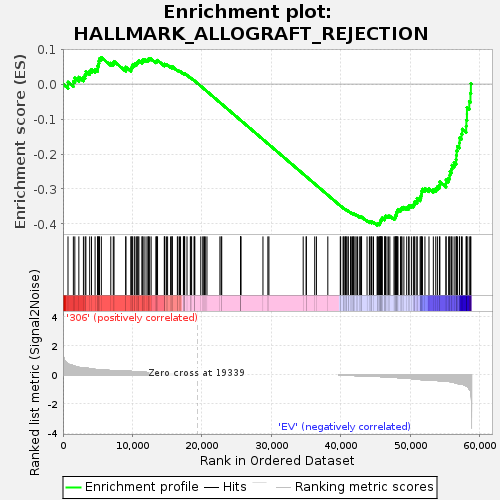
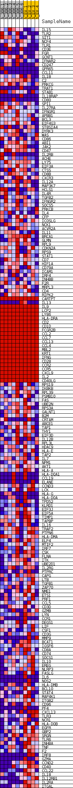
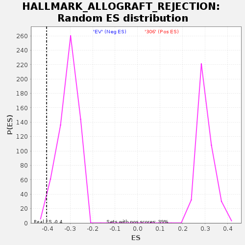

| | | Dataset | 306_EV_express.306_EV.cls#306_versus_EV |
| Phenotype | 306_EV.cls#306_versus_EV |
| Upregulated in class | EV |
| GeneSet | HALLMARK_ALLOGRAFT_REJECTION |
| Enrichment Score (ES) | -0.40467015 |
| Normalized Enrichment Score (NES) | -1.3126864 |
| Nominal p-value | 0.011551155 |
| FDR q-value | 0.54956764 |
| FWER p-Value | 0.575 |
Table: GSEA Results Summary

Fig 1: Enrichment plot: HALLMARK_ALLOGRAFT_REJECTION
Profile of the Running ES Score & Positions of GeneSet Members on the Rank Ordered List
| SYMBOL | TITLE | RANK IN GENE LIST | RANK METRIC SCORE | RUNNING ES | CORE ENRICHMENT | | 1 | IL15 | NNN | 719 | 0.749 | 0.0058 | No |
| 2 | TLR2 | NNN | 1492 | 0.611 | 0.0073 | No |
| 3 | SIT1 | NNN | 1703 | 0.574 | 0.0175 | No |
| 4 | NCF4 | NNN | 2282 | 0.505 | 0.0198 | No |
| 5 | TLR1 | NNN | 2941 | 0.470 | 0.0199 | No |
| 6 | CD3E | NNN | 3190 | 0.465 | 0.0269 | No |
| 7 | FGR | NNN | 3295 | 0.465 | 0.0363 | No |
| 8 | GCNT1 | NNN | 3844 | 0.419 | 0.0370 | No |
| 9 | IFNAR2 | NNN | 4105 | 0.395 | 0.0421 | No |
| 10 | CD247 | NNN | 4621 | 0.364 | 0.0420 | No |
| 11 | GPR65 | NNN | 4982 | 0.351 | 0.0443 | No |
| 12 | CCL11 | NNN | 5004 | 0.351 | 0.0524 | No |
| 13 | IL1B | NNN | 5129 | 0.345 | 0.0586 | No |
| 14 | C2 | NNN | 5175 | 0.343 | 0.0661 | No |
| 15 | PRKCG | NNN | 5251 | 0.337 | 0.0729 | No |
| 16 | TRAT1 | NNN | 5521 | 0.328 | 0.0762 | No |
| 17 | STAB1 | NNN | 6880 | 0.281 | 0.0598 | No |
| 18 | IL18RAP | NNN | 7240 | 0.274 | 0.0603 | No |
| 19 | CD80 | NNN | 7345 | 0.274 | 0.0651 | No |
| 20 | SPI1 | NNN | 9036 | 0.260 | 0.0425 | No |
| 21 | IL27RA | NNN | 9048 | 0.259 | 0.0486 | No |
| 22 | IFNGR1 | NNN | 9770 | 0.231 | 0.0418 | No |
| 23 | APBB1 | NNN | 9830 | 0.229 | 0.0463 | No |
| 24 | BCL3 | NNN | 9958 | 0.223 | 0.0495 | No |
| 25 | EIF4G3 | NNN | 9974 | 0.222 | 0.0546 | No |
| 26 | ST8SIA4 | NNN | 10257 | 0.214 | 0.0550 | No |
| 27 | DYRK3 | NNN | 10357 | 0.210 | 0.0583 | No |
| 28 | WAS | NNN | 10610 | 0.199 | 0.0588 | No |
| 29 | CD86 | NNN | 10689 | 0.196 | 0.0622 | No |
| 30 | ABI1 | NNN | 10811 | 0.193 | 0.0648 | No |
| 31 | JAK2 | NNN | 10927 | 0.190 | 0.0674 | No |
| 32 | CD47 | NNN | 11382 | 0.180 | 0.0639 | No |
| 33 | IL2RB | NNN | 11400 | 0.179 | 0.0680 | No |
| 34 | ACHE | NNN | 11536 | 0.175 | 0.0699 | No |
| 35 | LY75 | NNN | 11798 | 0.166 | 0.0694 | No |
| 36 | EIF3A | NNN | 12093 | 0.157 | 0.0682 | No |
| 37 | CTSS | NNN | 12274 | 0.152 | 0.0688 | No |
| 38 | CD8B | NNN | 12294 | 0.152 | 0.0721 | No |
| 39 | CXCR3 | NNN | 12473 | 0.146 | 0.0726 | No |
| 40 | IL12A | NNN | 12689 | 0.142 | 0.0723 | No |
| 41 | MAP3K7 | NNN | 13369 | 0.123 | 0.0637 | No |
| 42 | HCLS1 | NNN | 13480 | 0.120 | 0.0647 | No |
| 43 | IL4R | NNN | 13508 | 0.120 | 0.0671 | No |
| 44 | TGFB2 | NNN | 13612 | 0.117 | 0.0682 | No |
| 45 | IFNGR2 | NNN | 14584 | 0.094 | 0.0539 | No |
| 46 | SOCS5 | NNN | 14618 | 0.093 | 0.0556 | No |
| 47 | PRKCB | NNN | 14659 | 0.093 | 0.0571 | No |
| 48 | IL4 | NNN | 14891 | 0.088 | 0.0553 | No |
| 49 | CFP | NNN | 15061 | 0.084 | 0.0544 | No |
| 50 | ICOSLG | NNN | 15490 | 0.078 | 0.0490 | No |
| 51 | NCK1 | NNN | 15690 | 0.074 | 0.0474 | No |
| 52 | ACVR2A | NNN | 15693 | 0.074 | 0.0492 | No |
| 53 | IL11 | NNN | 15724 | 0.074 | 0.0504 | No |
| 54 | BRCA1 | NNN | 16466 | 0.062 | 0.0393 | No |
| 55 | GLMN | NNN | 16549 | 0.061 | 0.0393 | No |
| 56 | RPL9 | NNN | 16780 | 0.056 | 0.0368 | No |
| 57 | CDKN2A | NNN | 16924 | 0.052 | 0.0356 | No |
| 58 | RPS9 | NNN | 17337 | 0.043 | 0.0296 | No |
| 59 | STAT1 | NNN | 17384 | 0.043 | 0.0298 | No |
| 60 | CD7 | NNN | 17462 | 0.041 | 0.0295 | No |
| 61 | HIF1A | NNN | 17470 | 0.041 | 0.0303 | No |
| 62 | CD79A | NNN | 17525 | 0.040 | 0.0304 | No |
| 63 | ICAM1 | NNN | 17855 | 0.033 | 0.0256 | No |
| 64 | IRF4 | NNN | 18338 | 0.024 | 0.0179 | No |
| 65 | INHBB | NNN | 18416 | 0.022 | 0.0171 | No |
| 66 | F2R | NNN | 18518 | 0.019 | 0.0159 | No |
| 67 | MRPL3 | NNN | 18871 | 0.012 | 0.0102 | No |
| 68 | CD4 | NNN | 18939 | 0.011 | 0.0093 | No |
| 69 | RIPK2 | NNN | 18982 | 0.010 | 0.0088 | No |
| 70 | CARTPT | NNN | 19840 | 0.000 | -0.0058 | No |
| 71 | IL13 | NNN | 20150 | 0.000 | -0.0111 | No |
| 72 | IL9 | NNN | 20175 | 0.000 | -0.0115 | No |
| 73 | LCP2 | NNN | 20377 | 0.000 | -0.0149 | No |
| 74 | LY86 | NNN | 20486 | 0.000 | -0.0168 | No |
| 75 | HLA-DRA | NNN | 20728 | 0.000 | -0.0209 | No |
| 76 | CD2 | NNN | 22595 | 0.000 | -0.0527 | No |
| 77 | CD1D | NNN | 22782 | 0.000 | -0.0559 | No |
| 78 | FCGR2B | NNN | 22855 | 0.000 | -0.0571 | No |
| 79 | CCL2 | NNN | 25574 | 0.000 | -0.1035 | No |
| 80 | CCL7 | NNN | 25575 | 0.000 | -0.1035 | No |
| 81 | CCL13 | NNN | 25578 | 0.000 | -0.1035 | No |
| 82 | CCL4 | NNN | 25607 | 0.000 | -0.1040 | No |
| 83 | MBL2 | NNN | 28791 | 0.000 | -0.1583 | No |
| 84 | KRT1 | NNN | 29501 | 0.000 | -0.1703 | No |
| 85 | IFNG | NNN | 29649 | 0.000 | -0.1728 | No |
| 86 | CD28 | NNN | 34584 | 0.000 | -0.2570 | No |
| 87 | CCR2 | NNN | 35025 | 0.000 | -0.2645 | No |
| 88 | CCR5 | NNN | 35026 | 0.000 | -0.2645 | No |
| 89 | CXCL9 | NNN | 36244 | 0.000 | -0.2853 | No |
| 90 | IL2 | NNN | 36489 | 0.000 | -0.2894 | No |
| 91 | CD40LG | NNN | 38130 | 0.000 | -0.3174 | No |
| 92 | RPS19 | NNN | 39928 | -0.006 | -0.3479 | No |
| 93 | IKBKB | NNN | 39979 | -0.007 | -0.3486 | No |
| 94 | RPL39 | NNN | 40327 | -0.015 | -0.3541 | No |
| 95 | PSMB10 | NNN | 40426 | -0.017 | -0.3554 | No |
| 96 | FAS | NNN | 40472 | -0.018 | -0.3557 | No |
| 97 | UBE2N | NNN | 40675 | -0.023 | -0.3586 | No |
| 98 | RPS3A | NNN | 40758 | -0.024 | -0.3594 | No |
| 99 | GALNT1 | NNN | 40768 | -0.025 | -0.3590 | No |
| 100 | B2M | NNN | 41050 | -0.031 | -0.3630 | No |
| 101 | CRTAM | NNN | 41058 | -0.031 | -0.3624 | No |
| 102 | ABCE1 | NNN | 41395 | -0.037 | -0.3672 | No |
| 103 | TAP1 | NNN | 41505 | -0.040 | -0.3682 | No |
| 104 | THY1 | NNN | 41689 | -0.043 | -0.3702 | No |
| 105 | EIF3D | NNN | 41779 | -0.046 | -0.3707 | No |
| 106 | IL12B | NNN | 41844 | -0.047 | -0.3706 | No |
| 107 | RPL3L | NNN | 42030 | -0.050 | -0.3726 | No |
| 108 | HDAC9 | NNN | 42211 | -0.054 | -0.3743 | No |
| 109 | HLA-E | NNN | 42398 | -0.058 | -0.3761 | No |
| 110 | TAP2 | NNN | 42663 | -0.064 | -0.3791 | No |
| 111 | IL7 | NNN | 42819 | -0.067 | -0.3801 | No |
| 112 | NPM1 | NNN | 42951 | -0.070 | -0.3806 | No |
| 113 | AKT1 | NNN | 42989 | -0.071 | -0.3796 | No |
| 114 | HLA-A | NNN | 43779 | -0.089 | -0.3909 | No |
| 115 | HLA-DQA1 | NNN | 44116 | -0.092 | -0.3944 | No |
| 116 | CCL19 | NNN | 44222 | -0.092 | -0.3940 | No |
| 117 | ELANE | NNN | 44423 | -0.092 | -0.3952 | No |
| 118 | CCND3 | NNN | 44477 | -0.092 | -0.3939 | No |
| 119 | LCK | NNN | 44708 | -0.098 | -0.3954 | No |
| 120 | HLA-G | NNN | 45250 | -0.110 | -0.4020 | Yes |
| 121 | HLA-DOA | NNN | 45252 | -0.110 | -0.3994 | Yes |
| 122 | TPD52 | NNN | 45417 | -0.112 | -0.3995 | Yes |
| 123 | KLRD1 | NNN | 45599 | -0.117 | -0.3998 | Yes |
| 124 | EIF3J | NNN | 45626 | -0.117 | -0.3974 | Yes |
| 125 | EIF5A | NNN | 45661 | -0.118 | -0.3951 | Yes |
| 126 | TIMP1 | NNN | 45690 | -0.119 | -0.3927 | Yes |
| 127 | TAPBP | NNN | 45709 | -0.120 | -0.3902 | Yes |
| 128 | IL16 | NNN | 45829 | -0.122 | -0.3893 | Yes |
| 129 | TRAF2 | NNN | 45867 | -0.122 | -0.3870 | Yes |
| 130 | PTPN6 | NNN | 45932 | -0.124 | -0.3851 | Yes |
| 131 | HLA-DMA | NNN | 45957 | -0.124 | -0.3825 | Yes |
| 132 | ELF4 | NNN | 46323 | -0.135 | -0.3855 | Yes |
| 133 | MTIF2 | NNN | 46344 | -0.136 | -0.3825 | Yes |
| 134 | IRF7 | NNN | 46377 | -0.137 | -0.3798 | Yes |
| 135 | CSK | NNN | 46423 | -0.138 | -0.3773 | Yes |
| 136 | FLNA | NNN | 46651 | -0.143 | -0.3777 | Yes |
| 137 | ITK | NNN | 46848 | -0.149 | -0.3774 | Yes |
| 138 | UBE2D1 | NNN | 47062 | -0.153 | -0.3774 | Yes |
| 139 | IL2RG | NNN | 47661 | -0.171 | -0.3835 | Yes |
| 140 | PTPRC | NNN | 47798 | -0.176 | -0.3815 | Yes |
| 141 | CAPG | NNN | 47871 | -0.178 | -0.3785 | Yes |
| 142 | LTB | NNN | 47906 | -0.179 | -0.3747 | Yes |
| 143 | TGFB1 | NNN | 48036 | -0.183 | -0.3726 | Yes |
| 144 | ZAP70 | NNN | 48037 | -0.183 | -0.3682 | Yes |
| 145 | NME1 | NNN | 48087 | -0.185 | -0.3646 | Yes |
| 146 | ETS1 | NNN | 48145 | -0.186 | -0.3610 | Yes |
| 147 | PRF1 | NNN | 48235 | -0.189 | -0.3580 | Yes |
| 148 | CCL5 | NNN | 48593 | -0.204 | -0.3592 | Yes |
| 149 | CD3D | NNN | 48715 | -0.207 | -0.3563 | Yes |
| 150 | GZMB | NNN | 48813 | -0.211 | -0.3529 | Yes |
| 151 | LYN | NNN | 49084 | -0.223 | -0.3521 | Yes |
| 152 | CCR1 | NNN | 49488 | -0.237 | -0.3533 | Yes |
| 153 | DEGS1 | NNN | 49772 | -0.240 | -0.3523 | Yes |
| 154 | LIF | NNN | 49829 | -0.243 | -0.3475 | Yes |
| 155 | CSF1 | NNN | 50165 | -0.256 | -0.3470 | Yes |
| 156 | CD3G | NNN | 50447 | -0.271 | -0.3453 | Yes |
| 157 | MMP9 | NNN | 50579 | -0.278 | -0.3408 | Yes |
| 158 | BCAT1 | NNN | 50661 | -0.283 | -0.3354 | Yes |
| 159 | IGSF6 | NNN | 50971 | -0.297 | -0.3335 | Yes |
| 160 | CD8A | NNN | 50979 | -0.298 | -0.3265 | Yes |
| 161 | CD74 | NNN | 51420 | -0.317 | -0.3264 | Yes |
| 162 | SOCS1 | NNN | 51520 | -0.323 | -0.3203 | Yes |
| 163 | IL10 | NNN | 51598 | -0.327 | -0.3137 | Yes |
| 164 | EREG | NNN | 51636 | -0.329 | -0.3064 | Yes |
| 165 | NLRP3 | NNN | 51755 | -0.338 | -0.3003 | Yes |
| 166 | FASLG | NNN | 52113 | -0.349 | -0.2980 | Yes |
| 167 | IL6 | NNN | 52697 | -0.357 | -0.2994 | Yes |
| 168 | NOS2 | NNN | 53323 | -0.357 | -0.3014 | Yes |
| 169 | HLA-DMB | NNN | 53671 | -0.367 | -0.2985 | Yes |
| 170 | BCL10 | NNN | 53907 | -0.385 | -0.2933 | Yes |
| 171 | STAT4 | NNN | 54200 | -0.407 | -0.2885 | Yes |
| 172 | MAP4K1 | NNN | 54266 | -0.412 | -0.2796 | Yes |
| 173 | ITGB2 | NNN | 55142 | -0.435 | -0.2841 | Yes |
| 174 | CD96 | NNN | 55156 | -0.436 | -0.2738 | Yes |
| 175 | PF4 | NNN | 55525 | -0.455 | -0.2692 | Yes |
| 176 | CXCL13 | NNN | 55683 | -0.459 | -0.2608 | Yes |
| 177 | TLR3 | NNN | 55715 | -0.463 | -0.2502 | Yes |
| 178 | NCR1 | NNN | 55958 | -0.480 | -0.2428 | Yes |
| 179 | HLA-DOB | NNN | 56005 | -0.485 | -0.2319 | Yes |
| 180 | EGFR | NNN | 56316 | -0.522 | -0.2246 | Yes |
| 181 | GBP2 | NNN | 56598 | -0.559 | -0.2160 | Yes |
| 182 | SRGN | NNN | 56624 | -0.561 | -0.2029 | Yes |
| 183 | TLR6 | NNN | 56682 | -0.568 | -0.1902 | Yes |
| 184 | INHBA | NNN | 56790 | -0.583 | -0.1780 | Yes |
| 185 | TNF | NNN | 57074 | -0.621 | -0.1679 | Yes |
| 186 | F2 | NNN | 57107 | -0.624 | -0.1535 | Yes |
| 187 | IRF8 | NNN | 57379 | -0.643 | -0.1426 | Yes |
| 188 | GZMA | NNN | 57482 | -0.648 | -0.1288 | Yes |
| 189 | CCND2 | NNN | 58049 | -0.742 | -0.1206 | Yes |
| 190 | CD40 | NNN | 58076 | -0.749 | -0.1030 | Yes |
| 191 | CCL22 | NNN | 58162 | -0.780 | -0.0857 | Yes |
| 192 | IL18 | NNN | 58164 | -0.780 | -0.0669 | Yes |
| 193 | IL12RB1 | NNN | 58496 | -0.957 | -0.0495 | Yes |
| 194 | IL2RA | NNN | 58670 | -1.087 | -0.0264 | Yes |
| 195 | ITGAL | NNN | 58729 | -1.208 | 0.0017 | Yes |
Table: GSEA details [plain text format]

Fig 2: HALLMARK_ALLOGRAFT_REJECTION
Blue-Pink O' Gram in the Space of the Analyzed GeneSet

Fig 3: HALLMARK_ALLOGRAFT_REJECTION: Random ES distribution
Gene set null distribution of ES for HALLMARK_ALLOGRAFT_REJECTION